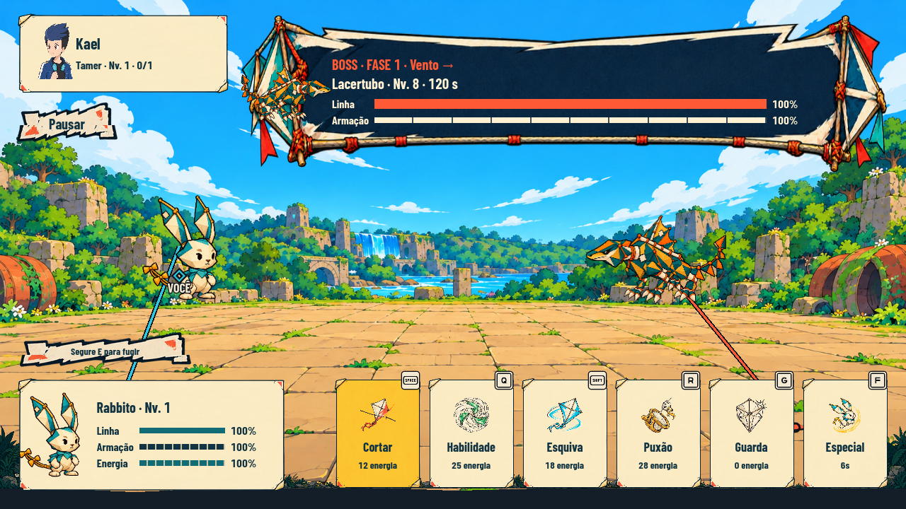
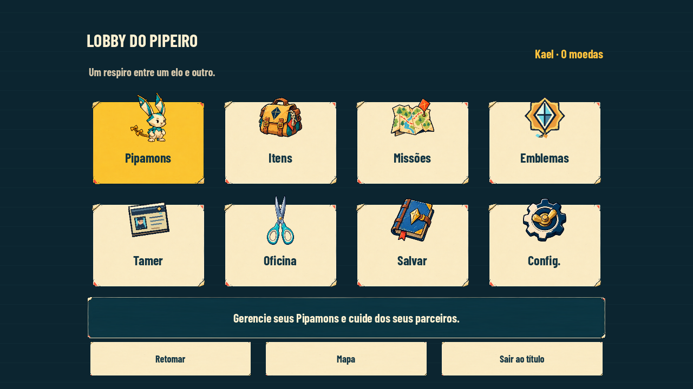
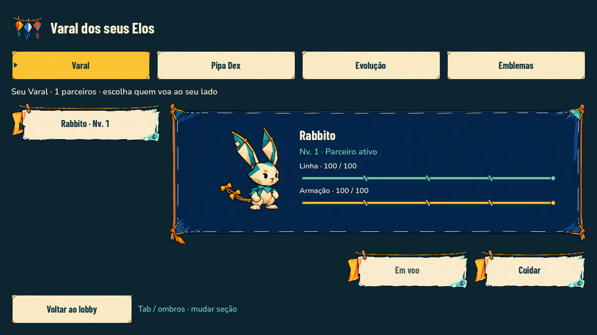
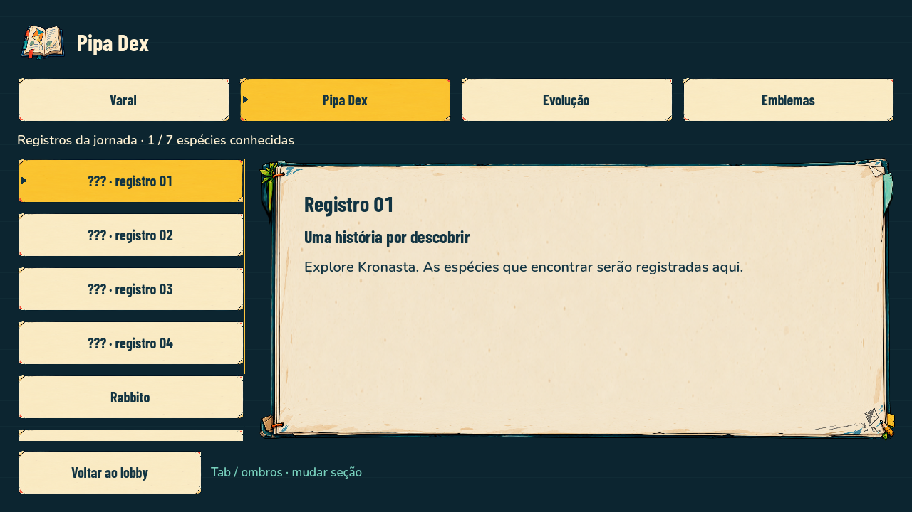
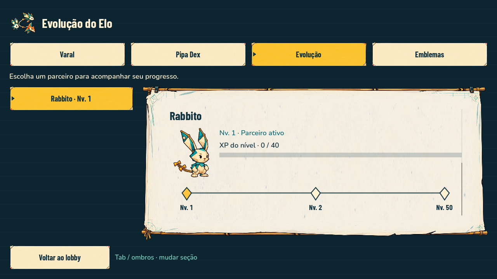
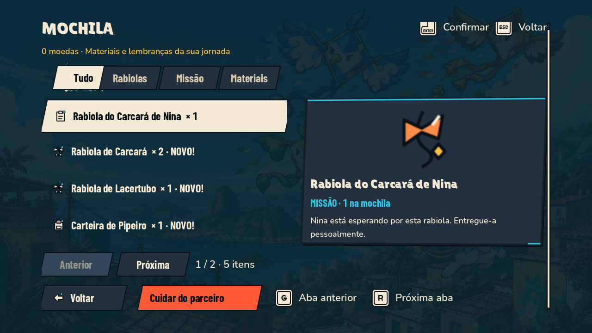
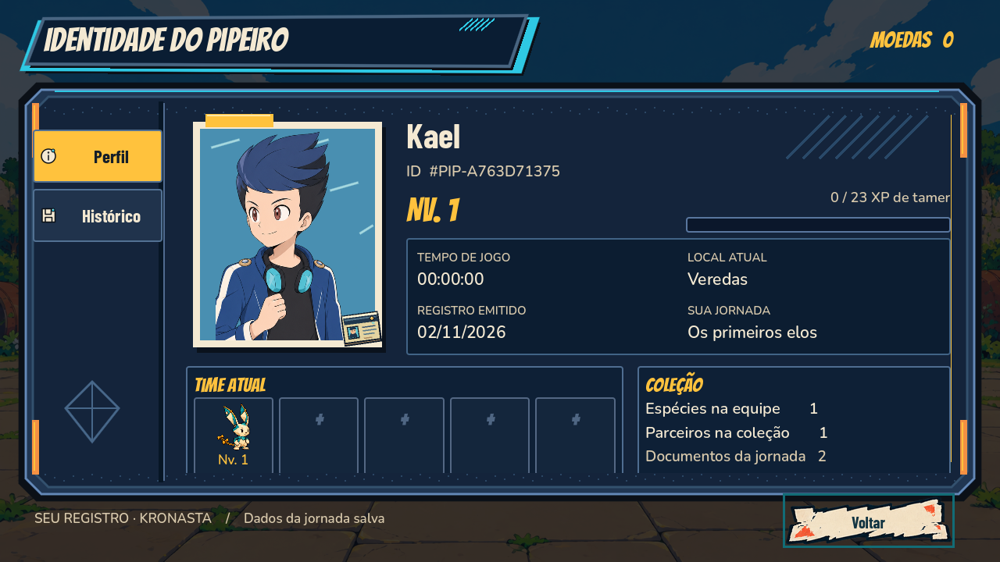
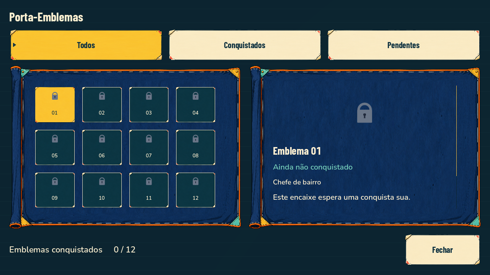
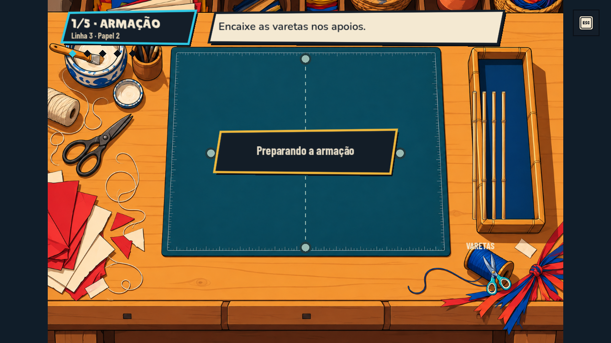
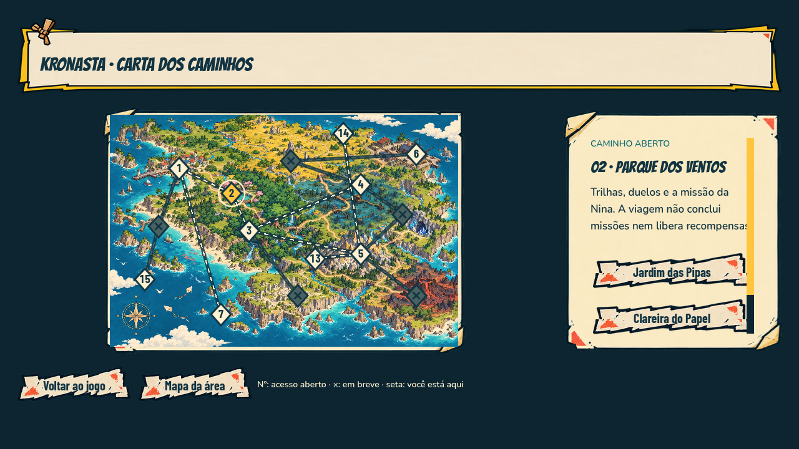

Sem consultar o nome do projeto: estas telas parecem pertencer ao mesmo jogo? Quais destoam? Que elementos fizeram você agrupá-las?
Registre também se já conhecia o projeto. Não há resposta certa predefinida: queremos as associações espontâneas.









